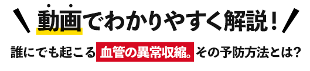

狭心症・心筋梗塞・動悸・胸の痛みの原因のひとつ、
血管の異常収縮を「小林式EPA」が
劇的に抑える⁉
年齢による健康不安を抱える“なぎら健壱さん”が、山口大学の小林誠教授（特命）の研究室に直撃！

あなたの悩みの原因。実は血管に異常な現象が起きていた!?
突然ですが、あなたは胸の痛み、動悸、頭痛、めまいなどに悩んではいませんか？もしかしたらその悩みは、あなたの血管で起きている異常な現象が原因かもしれません。今日はその謎について、詳しくお話ししていきます。
誰の血管でも起こる可能性のある異常な現象。これを「血管の異常収縮」と言い、突然血管が痙攣（けいれん）するようにして縮み、血液の流れに障害をきたす状態のことを指します。また医学用語で血管れん縮（スパズム）とも言われています。

突然健康な血管を異常に収縮させてしまうことから、大変に恐れられている存在で、動悸、胸の痛み、頭痛、めまい、しびれといった日常で起こる症状だけでなく、脳梗塞、心筋梗塞などの重篤な病気の引き金になることも。
そしてこの血管の異常収縮の最大の問題は、「どのようにして起こるのか原因不明だった」ことにありました。
世界初の解明を成し遂げたのは、日本人の医師だった!?
長年、医学界で原因不明の難病と恐れられてきた血管の異常収縮。この原因を解明しようと世界中の研究者が力を注いでいましたが、思うような結果は出ていませんでした。
もちろん医療の現場では、幾度となく血管の異常収縮による理不尽な死が起きていました。
その救えない悔しさと無力さが積み重なり、「血管病を撲滅したい」と研究の道に進んだ循環器内科医師の日本人がいます。それが山口大学医学部の「小林誠教授」。
研究をはじめて15年後、ついに世界で初めて「血管の異常収縮のメカニズムを解明」しました。その後もいくつもの世界初の発見を成し遂げ、血管病研究において、常に世界のトップを走り続ける小林教授とその研究チーム。
研究成果は、世界トップクラスの医学雑誌が特別に絶賛するなど、医学界から非常に高い評価を受けました。
そんな小林教授に、フォークシンガーのなぎら健壱さんが鋭く迫ります。